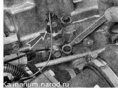
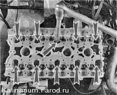
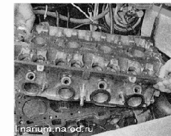
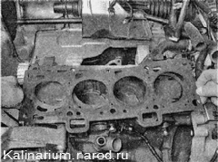
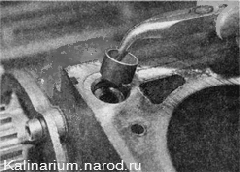
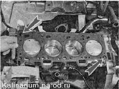
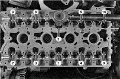
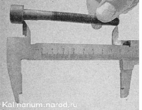

Головка блока цилиндров - снятие и установкаГоловку блока цилиндров можно снять в сборе с распределительными валами и термостатом (для доступа к шатунно-поршневой группе, для замены прокладки и т. п.). Если головка подлежит ремонту, целесообразно ее максимально разобрать еще до демонтажа с блока цилиндров. Для выполнения работы потребуется смотровая канава или эстакада, а также новая прокладка головки блока цилиндров. Снятие 1. Сливаем из двигателя охлаждающую жидкость. Если предстоит ремонт шатунно-поршневой группы, целесообразно сразу слить масло из картера двигателя. 2. Снимаем декоративную накладку двигателя. 3. Ключом на 10 мм отворачиваем болт крепления наконечника провода «массы» и отсоединяем его от головки блока. Отсоединяем колодку проводов от датчика аварийного давления масла. 
4. Чтобы не повредить, отсоединяем колодку провода от датчика температуры охлаждающей жидкости. 5. Отсоединяем корпус термостата от головки блока цилиндров. 6. Снимаем крышку головки блока цилиндров. 7. Снимаем распределительные валы. 8. Извлекаем из посадочных отверстий гидротолкатели 9. Снимаем каталитический коллектор Датчики положения распределительного вала и указателя температуры можно не снимать, но при этом нужно снимать головку с блока цилиндров аккуратно, чтобы случайно не повредить датчики. 10. Равномерно, в несколько приемов, шестигранным ключом на 10 мм, отворачиваем десять болтов крепления головки блока цилиндров. 
11. Снимаем головку с блока цилиндров. 12. Снимаем прокладку головки блока цилиндров. 
13. Чтобы не потерять, вынимаем две направляющие втулки из посадочных отверстий в блоке цилиндров. 
14. Промываем головку блока цилиндров от грязи и отложений керосином или дизельным топливом. Установка 1. Удаляем из резьбовых отверстий блока цилиндров (под болты крепления головки блока) остатки масла и охлаждающей жидкости. 2. Протираем тканью привалочные плоскости головки и блока цилиндров, обезжириваем их растворителем. При установке головки блока цилиндров всегда используйте новую прокладку Попадание масла на поверхность прокладки недопустимо. 3. Устанавливаем направляющие втулки головки в посадочные места блока цилиндров. Укладываем на блок цилиндров прокладку, при этом направляющие втулки должны войти в соответствующие отверстия прокладки. 4. Устанавливаем на блок цилиндров головку. Слегка перемещая головку из стороны в сторону, добиваемся, чтобы направляющие втулки вошли в соответствующие углубления головки. Предупреждение: Повторное использование болтов крепления головки блока цилиндров допускается только в том случае, если их длина не превышает 100 мм.

Последовательность затяжки болтов головки блока цилиндров 5. Штангенциркулем или слесарной линейкой измеряем длину болтов. Болты длиной более 100 мм заменяем 6. Перед установкой окунаем резьбовую часть болтов в моторное масло, после чего даем маслу стечь, выждав около получаса. 7. Устанавливаем в отверстия головки болты ее крепления. Динамометрическим ключом затягиваем болты крепления головки в три приема — сначала моментом 20 П-м (2 кгс-м), затем доворачиваем болты на 90° и потом еще раз доворачиваем болты на 90°. При этом соблюдаем очередность, указанную на фото (см. выше). 8. Дальнейшую сборку двигателя выполняем в последовательности, обратной сборке. |